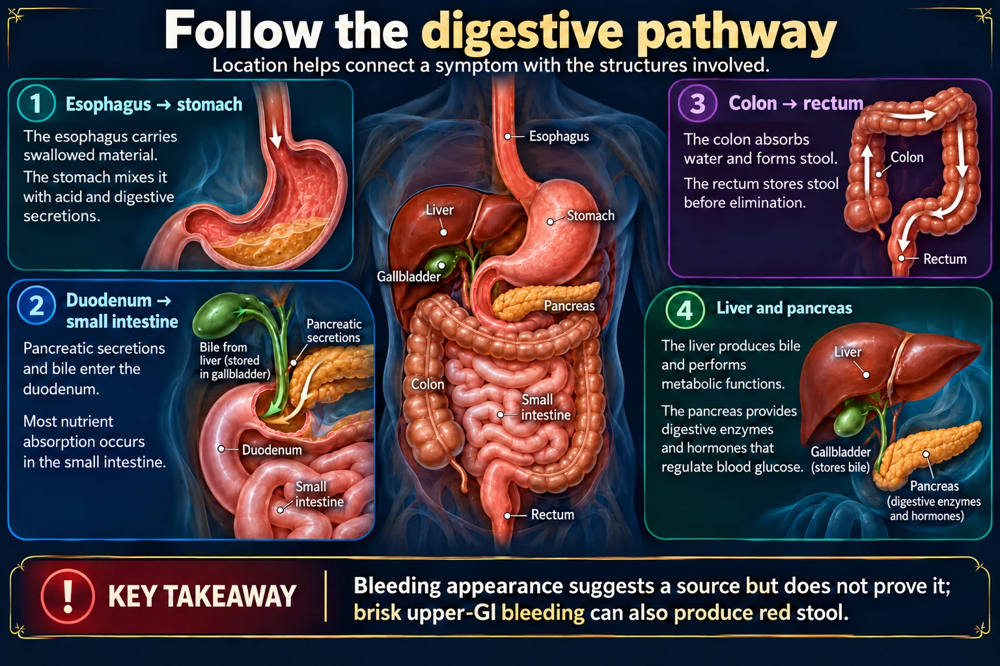

The nurse explains that an EGD allows the provider to do which of the following?
Answer
Directly visualize and biopsy the esophagus, stomach, and duodenum
Reasoning
EGD is direct endoscopic visualization of the upper GI tract that also permits biopsy; it does not evaluate the colon or biliary tree.
Why the other answers do not fit
- Examine the colon and rectum
- Measure liver enzyme levels
- Image the biliary ducts only
Shared reasoning for choices without a separate note: EGD is direct endoscopic visualization of the upper GI tract that also permits biopsy; it does not evaluate the colon or biliary tree.
